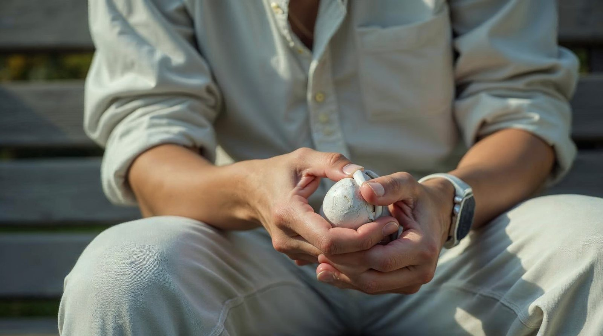
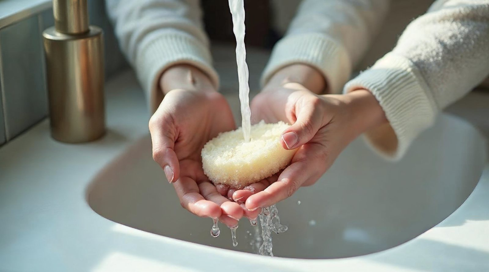
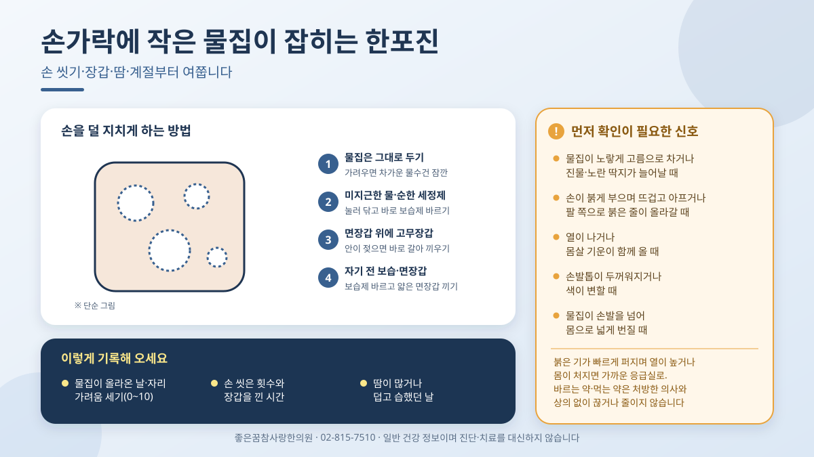

이종호 한의사 감수좋은꿈참사랑한의원 대표원장 (한의사 면허번호 19769)발행 2026-11-26 · 수정 2026-11-26
이 글의 차례
설거지를 마치고 고무장갑을 벗었는데 손가락 옆면이 근질근질합니다. 들여다보니 좁쌀보다 작은 물집이 피부 속에 박힌 듯 줄지어 있습니다. 밤이 되면 손가락을 비비고 싶을 만큼 가렵고, 며칠 뒤에는 그 자리가 말라 껍질이 벗겨집니다.
손가락 옆면과 손바닥, 때로는 발바닥에 투명하고 작은 물집이 무리 지어 잡히고 심하게 가렵다면 한포진일 수 있습니다. 저는 이럴 때 손 씻는 횟수와 장갑, 땀, 계절부터 여쭙고, 무좀과의 구분은 피부과 검사를 기준으로 둡니다.
먼저 짚어 둘 것이 있습니다. 물집이 노랗게 고름으로 차거나, 진물이 늘고 손이 붉게 부으며 뜨겁고 아프다면 감염일 수 있습니다. 이때는 생활 관리보다 피부과나 병원에서 확인을 받는 것이 먼저입니다.
진료실에서 이런 말씀을 자주 듣습니다. 손은 하루에도 수십 번 써야 하니 아물 틈이 없다고요. 음식점 주방에서, 미용실에서, 아이 기저귀를 갈며, 병원에서 손을 씻고 또 씻는 분들이 많습니다.
손을 내밀기 망설여지고, 계산대에서 카드를 건넬 때도 손끝을 감추게 된다는 분도 계십니다. 겉으로는 작은 물집이지만 일과 살림을 모두 손으로 하는 분께는 하루 전체가 불편해지는 일입니다. 그동안 얼마나 애쓰셨을까 싶습니다.
왜 손바닥과 손가락에만 물집이 잡힐까요
손바닥과 발바닥은 피부 바깥층이 두껍습니다. 그래서 피부 속에서 생긴 작은 물집이 쉽게 터지지 못하고 안에 머물러, 겉에서 보면 피부 속에 알갱이가 박힌 것처럼 보입니다. 한포진 물집이 깊고 단단하게 느껴지는 이유입니다.
한포진은 습진의 한 갈래로 이해됩니다. 땀샘 질환이라는 오해가 있지만 땀이 직접 원인이라기보다, 땀과 습기가 습진을 부추기는 요인 가운데 하나로 봅니다. 물집은 대개 2~3주 사이에 마르고, 그 자리가 벗겨지거나 갈라지며 다시 반복되곤 합니다.
자주 함께 이야기되는 요인이 몇 가지 있습니다. 잦은 물일과 세제, 손에 차는 땀, 봄·여름이나 환절기, 스트레스와 잠 부족, 아토피 체질, 그리고 니켈 같은 금속에 대한 알레르기입니다. 한 가지보다 여러 가지가 겹친 시기에 올라오는 분이 많습니다.
한의학에서는 손바닥에 땀이 많고 열이 잘 오르는 분, 반대로 손발이 차고 피부가 쉽게 마르는 분을 나눠 봅니다. 같은 한포진이라도 몸이 기우는 쪽이 다르면 생활에서 챙길 것이 달라지기 때문입니다. 이 구분은 피부과 진단을 대신하지 않고, 생활을 함께 살피는 길잡이로 씁니다.
물집이 생기고 마르는 흐름에 따라 돌봅니다
한포진은 대개 비슷한 순서로 지나갑니다. 먼저 손가락 옆면이 근질거리거나 화끈거리고, 하루 이틀 사이 작은 물집이 올라옵니다. 이 무렵 가려움이 가장 심하다는 분이 많습니다.
물집이 올라온 때는 터뜨리지 않고 시원하게 식히는 데 마음을 둡니다. 차가운 물수건을 몇 분 대고, 뜨거운 물과 세제는 최대한 피합니다. 일을 쉬기 어렵다면 이 며칠만큼은 장갑을 더 꼼꼼히 챙겨 주세요.
2~3주쯤 지나면 물집이 말라 껍질이 벗겨지고, 손가락 마디가 갈라지기 쉽습니다. 이때는 뜯지 않고 보습제를 자주, 넉넉히 바르는 쪽으로 무게를 옮깁니다. 갈라진 틈이 깊어 피가 나면 덧나지 않도록 깨끗하게 덮어 두세요.
이 흐름을 알고 계시면 지금이 어느 단계인지 보고 할 일을 고를 수 있습니다. 근질거림이 시작되는 첫날을 알아채는 것만으로도 그 주의 물일과 장갑을 미리 챙길 수 있지요.
먹는 것과 속도 함께 봅니다
진료실에서는 피부로 오신 분께도 대변을 며칠에 한 번 보는지, 못 본 날 가려움이 더 심한지를 여쭙습니다. 기름진 음식이나 술을 먹은 다음 날 물집이 올라왔는지도 함께 듣습니다. 피부와 속이 따로 움직이지 않는다고 보기 때문입니다.
특정 음식을 한꺼번에 끊으라고 말씀드리지는 않습니다. 다만 늦은 밤 과식을 줄이고 채소를 넉넉히 두며, 먹은 것과 물집이 올라온 날을 함께 적어 보시길 권합니다. 겹치는 것이 보이면 그때 하나씩 조정해도 늦지 않습니다.
손 씻기와 장갑, 이렇게 봅니다
손을 깨끗이 하려는 마음이 오히려 손을 지치게 하는 경우가 있습니다. 뜨거운 물로 오래 씻고, 거품을 많이 내고, 수건으로 박박 문지르면 피부의 기름막이 쉽게 벗겨집니다.
씻는 횟수를 줄이기 어려운 일이라면 씻는 방법을 바꿉니다. 미지근한 물, 순한 세정제, 문지르지 않고 눌러 닦기, 그리고 씻은 직후 보습제입니다. 손가락 사이와 옆면까지 꼼꼼히 바르는 것이 중요합니다.
장갑은 양날의 칼입니다. 물과 세제를 막아 주지만, 고무장갑을 오래 끼면 안에서 땀이 차 오히려 한포진이 심해질 수 있습니다. 얇은 면장갑을 먼저 끼고 그 위에 고무장갑을 끼면 땀을 덜 머금게 됩니다.
장갑 안이 젖었다면 바로 벗어 말리고, 면장갑은 자주 갈아 끼우세요. 손을 자주 씻어야 하는 일의 손 관리는 손을 자주 씻는 일을 하는데 손가락 사이가 갈라지고 따가울 때는 어떻게 살피나요?에 더 자세히 적어 두었습니다.

계절과 땀, 마음의 긴장
날이 풀리는 봄과 땀이 나기 시작하는 초여름에 한포진이 잦아진다는 분이 많습니다. 손에 땀이 많은 분은 긴장하는 자리에서 손바닥이 먼저 젖고, 그 습기가 피부를 무르게 만들기도 합니다.
마음이 바쁜 시기에도 손은 쉬지 못합니다. 마감이나 시험을 앞두고, 집안에 큰일이 있을 때 물집이 올라왔다는 분이 적지 않습니다. 잠이 얕은 밤에는 가려움을 더 크게 느껴 자는 사이 긁게 되지요.
땀이 차는 다른 자리의 피부 문제는 여름에 땀이 차는 곳마다 붉은 좁쌀 같은 것이 올라올 때는 어떻게 살피나요?에서도 보실 수 있습니다.
닿는 것을 하나씩 살펴봅니다
손은 하루 동안 참 많은 것에 닿습니다. 주방 세제, 손 소독제, 염색약, 고무장갑, 반지와 시계, 동전과 열쇠까지요. 이 가운데 하나가 피부를 자극하거나 알레르기를 일으키면 한포진과 비슷한 물집이 올라오기도 합니다.
반지를 낀 손가락만 유독 심하다면 금속을, 새 세제를 쓴 주부터 시작됐다면 세제를 의심해 봅니다. 한 번에 여러 가지를 바꾸면 무엇 때문인지 알 수 없으니, 하나씩 바꾸고 한두 주씩 지켜보세요.
어떤 물질에 반응하는지 정확히 알고 싶다면 피부과에서 첩포 검사를 상의해 볼 수 있습니다. 검사가 필요한지는 피부과에서 판단합니다.
무좀·접촉피부염과 나눠 보기
손발에 물집이 잡히면 무좀이 아닐까 걱정하시는 분이 많습니다. 겉모습만으로는 나누기 어려워 피부과에서 곰팡이 검사를 받아 보시는 것이 정확합니다. 아래는 진료실에서 흔히 헷갈리는 경우입니다.
- 무좀: 발가락 사이가 하얗게 짓무르거나 한쪽 발, 한쪽 손에만 생기기도 하고, 손발톱이 두꺼워지는 경우가 있습니다. 곰팡이 검사로 확인합니다.
- 접촉피부염: 특정 세제, 장갑 재질, 금속 장신구가 닿은 자리를 따라 붉고 가렵게 올라옵니다. 닿은 물건을 바꾸면 달라지는지 봅니다.
- 손 습진: 물집보다 갈라짐과 각질, 따가움이 앞서는 경우가 많습니다.
- 감염된 물집: 물집이 노랗게 흐려지고 진물·통증·열감이 늘어납니다.
무좀이 맞는데 습진 연고만 바르거나, 습진인데 무좀약만 바르면 엉뚱한 방향으로 시간을 쓰게 됩니다. 그래서 처음 생겼거나 모양이 달라졌다면 피부과에서 먼저 나눠 보시길 권합니다.
먼저 이렇게 여쭙니다
아래 질문을 떠올려 오시면 진료실에서 이야기가 한결 쉽게 풀립니다.
- 물집은 어느 손가락, 손바닥, 발바닥에 생기나요? 양쪽인가요, 한쪽인가요?
- 하루에 손을 몇 번쯤 씻고, 어떤 장갑을 하루 몇 시간 끼시나요?
- 손에 땀이 많은 편인가요? 긴장하면 손바닥이 먼저 젖나요?
- 물집이 올라오기 전에 잠이 줄었거나, 마음 쓰이는 일이 있었나요?
- 대변은 며칠에 한 번 보시나요? 못 본 날 가려움이 더 심한가요?
- 피부과에서 무좀 검사를 받아 보셨나요? 지금 쓰는 연고는 무엇인가요?

일상에서 먼저 해 볼 수 있는 것
- 물집은 터뜨리거나 뜯지 않고, 가려울 때는 차가운 물수건을 잠깐 대기
- 미지근한 물과 순한 세정제로 씻고, 수건으로 눌러 물기를 닦은 뒤 바로 보습제 바르기
- 물일할 때 면장갑 위에 고무장갑을 끼고, 안이 젖으면 바로 갈아 끼우기
- 반지·시계 같은 금속 장신구를 낀 자리가 더 심한지 살펴보기
- 발에 생겼다면 땀을 잘 흡수하는 양말로 자주 갈아 신기
- 잠들기 전 손에 보습제를 바르고 얇은 면장갑을 끼고 자 보기
자는 동안 긁는 것은 마음먹는다고 막기 어렵습니다. 손톱을 짧게 깎아 두는 것만으로도 상처를 줄일 수 있습니다. 한꺼번에 다 바꾸기보다 오늘은 장갑 하나, 내일은 보습 하나씩 더해 보세요.
예를 들면 이런 경우입니다
실제 어느 분의 사연이 아니라, 진료실에서 자주 보는 모습을 바탕으로 그려 본 장면입니다.
예를 들어 하루 종일 손님 머리를 감기는 미용 일을 하는 경우, 젖은 손으로 일하다 보니 손가락 옆면에 물집이 반복되기 쉽습니다. 일하는 중간 손을 말리는 시간과 장갑을 바꿔 끼는 때를 먼저 정해 보고, 무좀 검사는 피부과에서 받아 보시도록 안내합니다.
예를 들어 아이를 돌보며 하루 수십 번 손을 씻는 부모라면, 씻는 횟수를 줄이기보다 씻은 직후 보습하는 습관을 붙이는 쪽이 현실적입니다. 세면대 옆에 보습제를 두는 것부터 시작해 보시라고 말씀드립니다.
예를 들어 식당 주방에서 하루 내내 고무장갑을 끼고 일하는 경우라면, 장갑 안에 찬 땀이 문제일 수 있습니다. 면장갑을 덧끼고 쉬는 시간마다 갈아 끼우는 것부터 해 보고, 물집이 올라온 날과 바쁜 날이 겹치는지 함께 적어 봅니다.
스스로 점검해 보세요
- 손가락 옆면이나 손바닥에 좁쌀보다 작은 물집이 무리 지어 잡힌다
- 물집이 올라오기 전에 근질거리거나 화끈거리는 느낌이 먼저 온다
- 물집이 마른 자리가 벗겨지고 갈라지기를 되풀이한다
- 손을 하루 스무 번 넘게 씻거나 고무장갑을 몇 시간씩 낀다
- 날이 더워지거나 긴장할 때 손바닥이 먼저 젖는다
- 마음 쓰이는 일이 많거나 잠이 줄어든 주에 더 잦다
점수를 매기려는 목록은 아닙니다. 해당하는 줄에 표시해 오시면 그 줄부터 이야기를 시작하겠습니다.
얼마나 지켜보고 언제 상담할까요
장갑과 보습, 씻는 방법을 바꾼 뒤 2~3주는 물집이 올라오는 간격과 가려움이 어떻게 달라지는지 지켜보세요. 한포진은 한 번 마르고 끝나기보다 되풀이되는 일이 많아, 한 번의 물집보다 몇 주의 흐름을 보는 것이 정확합니다.
처음 생긴 물집이라면 생활 관리를 해 보기 전에 피부과에서 무좀인지부터 확인받으시길 권합니다. 가려움으로 밤잠을 일주일에 여러 번 설친다면 더 기다리지 말고 상담해 보세요.
한의원에서 함께 살필 수 있는 경우
- 피부과에서 한포진 진단을 받았지만 땀·잠·스트레스가 겹칠 때마다 반복되는 경우
- 손에 땀이 많거나 손발이 찬 편이라 몸 전체의 체온과 땀을 함께 살피고 싶은 경우
- 가려움 때문에 밤에 자주 깨거나, 소화와 대변이 함께 불편한 경우
좋은꿈참사랑한의원에 처음 오시면 진맥부터 합니다. 처음 오신 분이든 다시 오신 분이든 모든 분께 맥을 짚으며 잠과 소화, 대변, 땀과 체온, 요즘 마음 쓰이는 일을 여쭙고, 필요하다고 판단될 때 혀도 봅니다.
이어서 물집이 생긴 자리와 갈라진 곳, 진물이나 고름이 있는지 살피고, 피부과에서 받은 진단과 쓰는 연고를 확인합니다. 감염이 의심되면 피부과 확인이 먼저라고 말씀드리고 그 이유를 설명드립니다.
그다음 침, 한약 상담 가운데 지금 상태에 맞는 방법을 함께 정합니다. 치료 중에는 "괜찮으세요?" 하고 여쭙고, 편하면 이어 가고 불편하면 멈춥니다. 다시 오시면 지난번 이후 물집이 올라온 날과 손을 많이 쓴 날부터 이어서 여쭙습니다.
이렇게 기록해 오시면 상담이 쉬워집니다
물집은 진료실에 오는 날 이미 말라 있는 경우가 많습니다. 2~4주만 간단히 적어 보세요.
- 물집이 올라온 날과 자리, 가려움의 세기(0~10)
- 그날 손을 씻은 대략의 횟수와 장갑을 낀 시간
- 땀이 많았던 날, 날씨가 덥거나 습했던 날
- 잠든 시각, 마음 쓰이는 일이 있던 날
- 대변을 본 날과 못 본 날, 특별히 먹은 음식
- 쓰는 세정제와 보습제, 연고 이름
물집이 한창일 때 찍어 둔 사진은 진료실에서 모양을 설명하는 데 도움이 됩니다. 가려움이 언제 심한지 적는 방법은 가려움이 낮에 심한지 밤에 심한지는 왜 묻고, 어떻게 적어 두나요?를 참고해 보세요.
이런 증상은 먼저 확인이 필요합니다
- 물집이 노랗게 고름으로 차거나, 진물과 노란 딱지가 늘어나는 경우
- 손이 붉게 부으며 뜨겁고 아프거나, 팔 쪽으로 붉은 줄이 올라가는 경우
이런 신호가 있으면 한의원보다 가까운 병원이나 응급실을 먼저 찾으세요.
손은 쉬지 못하는데 물집은 자꾸 올라오니, 하루하루가 참 고단하셨을 겁니다. 일을 멈추라는 말 대신 지금 하시는 일 안에서 손을 덜 지치게 하는 방법을 함께 찾아보겠습니다. 다음에 오시면 하루에 손을 몇 번 씻고 장갑을 몇 시간 끼시는지부터 여쭙겠습니다.

여쭙는 것
- 물집은 어느 손가락, 손바닥, 발바닥에 생기나요? 양쪽인가요, 한쪽인가요?
- 하루에 손을 몇 번쯤 씻고, 어떤 장갑을 하루 몇 시간 끼시나요?
- 손에 땀이 많은 편인가요? 긴장하면 손바닥이 먼저 젖나요?
생활에서 해 볼 것
- 물집은 터뜨리거나 뜯지 않고, 가려울 때는 차가운 물수건을 잠깐 대기
- 미지근한 물과 순한 세정제로 씻고, 수건으로 눌러 물기를 닦은 뒤 바로 보습제 바르기
- 물일할 때 면장갑 위에 고무장갑을 끼고, 안이 젖으면 바로 갈아 끼우기
한의원에서 함께 살필 것
- 피부과에서 한포진 진단을 받았지만 땀·잠·스트레스가 겹칠 때마다 반복되는 경우
- 손에 땀이 많거나 손발이 찬 편이라 몸 전체의 체온과 땀을 함께 살피고 싶은 경우
- 가려움 때문에 밤에 자주 깨거나, 소화와 대변이 함께 불편한 경우
먼저 확인이 필요한 신호
- 물집이 노랗게 고름으로 차거나, 진물과 노란 딱지가 늘어나는 경우
- 손이 붉게 부으며 뜨겁고 아프거나, 팔 쪽으로 붉은 줄이 올라가는 경우
한눈에 보는 표
| 구분 | 핵심 |
|---|---|
| 여쭙는 것 | 물집은 어느 손가락, 손바닥, 발바닥에 생기나요? 양쪽인가요, 한쪽인가요? 하루에 손을 몇 번쯤 씻고, 어떤 장갑을 하루 몇 시간 끼시나요? |
| 생활에서 해 볼 것 | 물집은 터뜨리거나 뜯지 않고, 가려울 때는 차가운 물수건을 잠깐 대기 미지근한 물과 순한 세정제로 씻고, 수건으로 눌러 물기를 닦은 뒤 바로 보습제 바르기 |
| 한의원에서 함께 살필 것 | 피부과에서 한포진 진단을 받았지만 땀·잠·스트레스가 겹칠 때마다 반복되는 경우 손에 땀이 많거나 손발이 찬 편이라 몸 전체의 체온과 땀을 함께 살피고 싶은 경우 |
| 먼저 확인이 필요한 신호 | 물집이 노랗게 고름으로 차거나, 진물과 노란 딱지가 늘어나는 경우 손이 붉게 부으며 뜨겁고 아프거나, 팔 쪽으로 붉은 줄이 올라가는 경우 |
자주 묻는 질문
한포진은 다른 사람에게 옮나요?
한포진 자체는 옮는 병이 아닙니다. 다만 무좀처럼 곰팡이 감염이 섞여 있을 수 있어 처음 생겼다면 피부과에서 확인해 보시길 권합니다.
물집을 터뜨리면 빨리 낫나요?
터뜨리거나 뜯으면 그 자리로 세균이 들어가 감염될 수 있습니다. 가려울 때는 차가운 물수건을 잠깐 대고, 물집은 그대로 두는 편이 안전합니다.
땀이 많아서 생기는 건가요?
땀이 직접 원인이라기보다 땀과 습기가 한포진을 부추기는 요인 가운데 하나로 봅니다. 땀이 많은 시기와 물집이 겹치는지 적어 보시면 살필 곳이 보입니다.
스테로이드 연고를 계속 발라도 되나요?
바르는 기간과 양은 처방한 의사와 상의해 정하세요. 혼자 갑자기 끊거나 줄이지 않는 것이 안전합니다.
좋은꿈참사랑한의원은 재진 때 지난번 이야기부터 이어서 여쭙니다. 진료시간과 예약은 오시는 길에서 확인하세요.
어디서 상담받을 수 있나요?
좋은꿈참사랑한의원은 서울 동작구 만양로2길 2 신성빌딩 3층·5층(서울 동작구 상도동, 7호선 상도역 3번 출구 근처)에 있습니다. 한의사 3명(이종호 대표원장, 조영기 수석진료원장, 정원영 진료원장)이 진료합니다. 진료시간은 평일 09:30~20:00(점심 13:00~14:00), 토·일·공휴일 09:30~15:00이며, 방문 전 전화로 확인을 권합니다. 예약은 네이버 예약, 카카오톡 상담, 전화 02-815-7510로 받습니다.
이 글은 일반적인 건강 정보이며 개인의 진단이나 치료를 대신하지 않습니다. 증상이 있거나 복용 중인 약이 있다면 진료를 통해 확인하세요. 치료 효과는 개인마다 다를 수 있습니다.
작성 기준: 일반적으로 알려져 있는 건강 정보를 참고해 정리했습니다(대표원장 감수). 증상 기록은 1~2주 동안 하루 1회, 비슷한 시간에 적어 오시면 지난 상태와 비교하기 쉽습니다.